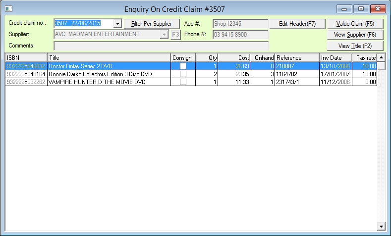
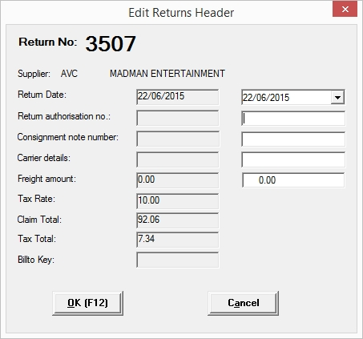
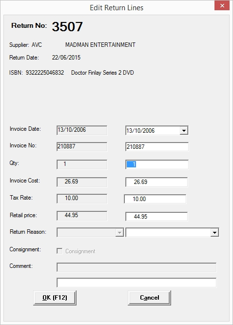

This is the window where you can enquire on past Credit Claims and edit some of the details if there is a variance in what was generated by the claim & what the supplier grants you in credit.
You can edit details in the header by clicking on the Edit Header(F7) button ot by pressing [F7].

Here you can edit the Return Date, Return Authorisation number, Consignment note number, Carrier details and Freight amount.
You can also double click on a line to edit, the Date, Invoice number, Quantity returned, Invoice cost of the item, Tax rate, Retail price, Return reason and Comment fields.

When you edit these fields, adjustments will be made in the Creditors module in the case of a cost or quantity change and also in the Title Master in the case of quantity.